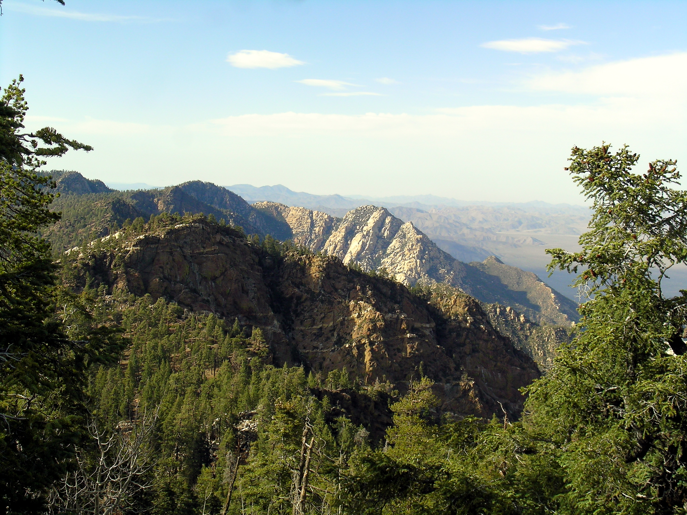

Este volcán es contiguo con el distrito de Guatemala. Muestra las características más sorprendentes en las poblaciones de San Vicente de Pacaya, Bejucal, Cedro, Patrocinio, San Francisco de Sales y Chagüites. Este es un término excelente para caminar, aprender sobre mineralogía e historia natural, tomar fotografías o sencillamente disfrutar del lugar. En realidad, logras caminar hasta la cima del volcán activo y echar un vistazo al cráter. Un medio inusual y emocionante.
Este es un lugar situado en la ladera del cerro El Peñón, a escasos kilómetros de la localidad de Escuintla. El lugar combina una cueva natural con una catarata de casi 64 m de altura. La cueva es de umbral volcánico siendo una de las pocas de este tipo en Guatemala. Posee forma de coraza y posee muchas cuevas pequeñas. La catarata está creada por el riachuelo Michatoya, posee cuatro pequeñas cascadas que están separadas por rocas envueltas de plantas. Logra saltar directamente al agua dulce, si lo apetece.

Aprenda sobre la cultura prehispánica en el museo La Democracia y visite los rostros tallados en piedra de una etapa más antigua de la cultura maya. Otra visita exigida son los sitios arqueológicos El Baúl y Las Ilusiones en el municipio de Santa Lucía Cotzumalguapa.
La Playa Tecojate se ubica en el municipio de Nueva Concepción, Escuintla, este es un sitio familiar visitados por habitantes de otros estados de Guatemala, aquí puedes disfrutar de un acogedor fin de semana relajado en las orillas del mar, además es un playa segura.
La costa del Pacífico es un paraíso para los pescadores. Si hay una entrada en los libros de registro para la pesca de agua salada, la costa del Pacífico de Guatemala lo tiene. Los pescadores disfrutaron de una captura reciente de 200 peces picudos, y eso fue en un solo día.
Se localiza en el departamento de Escuintla, en este acogedor lugar cuenta con distintas zonas reserva de animales, las especies más populares son leones, hipopótamos, hipopótamos, tortugas y otras especies. El área recreativa cuenta con restaurante y excursiones en lancha por una laguna.